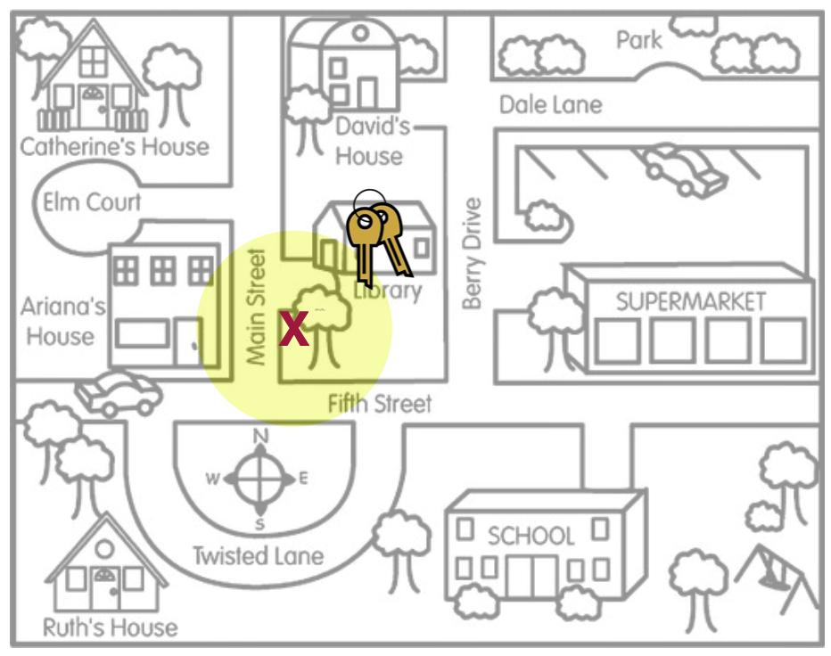
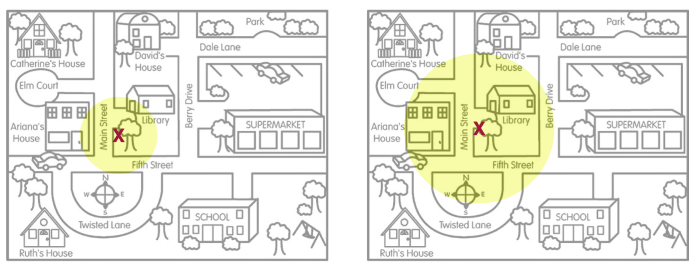

Statistical Unbiasedness and Statistical Precision
As you have seen in the readings and activities, the compatibility interval provides an estimate for the unknown population parameter by incorporating the point estimate and the uncertainty in that estimate due to sampling variation. There are two qualities of any compatibility interval that we need to take into consideration when we are interpreting these estimates: statistical unbiasedness and precision.
Statistical Unbiasedness
Statistical unbiasedness is the idea that the expected value of the distribution of point estimates is the actual parameter value. To help you think about this idea, imagine a person, Arthur Dent, has lost his keys. The actual location of the keys, the Library, is akin to the population parameter. It is unknown to Arthur, but does have an actual value. To continue our metaphor, the locations where Arthur searches for his keys are like sample statistics. They are point estimates from different samples of data he has collected in his mind about where he may have lost the keys. Lastly, the area of the search defined by Arthur’s search location is akin to a compatibility interval.
In our metaphor, unbiasedness would indicate that if we average across all the locations where Arthur searched, that average location (the expected value) would be the actual location of the keys (the unknown parameter). Another way of thinking about this, is that when we have an unbiased estimate, the compatibility interval includes the actual value of the unknown parameter. In other words, our compatibility interval has correctly “identified” the parameter value. Contrast this with an estimate that is statistically biased

When the point estimates are statistically biased, Arthur’s search locations (sample statistics) are systematically in the wrong place. On average, where Arthur searched (the middle of the yellow circle) is not the actual location of the keys. Subsequently, the compatibility interval would not correctly identify the value of the parameter.
Random Sampling: The Key to Statistically Unbiased Estimates
The key to whether or not the estimates are unbiased is whether the observed data were sampled randomly. (It is exactly the same question we asked about generalization.) Recall in the Gettysburg Address activity that when we used a non-random sampling method, the distribution of average word lengths was not at the true average word length of all the words in the Gettysburg Address. That is the expected value (average) of the different averages (point estimates) was not the same as the population parameter—the estimates were statistically biased.
In contrast, when we used a sampling method in which we randomly sampled words, the average of all the different averages was centered at the population mean—the samples produced unbiased estimates. Using random sampling produces unbiased estimates, which subsequently produce compatibility intervals that are much more likely to include the parameter value.
Why do we say “much more likely”? Shouldn’t a compatibility interval based on an unbiased estimate always include the value of the population parameter? Actually…no. In practice, we are centering our compatibility interval around the point estimate that comes from our observed data. In our key metaphor, this is akin to search on only one location (one “X”) and then building the search area (the yellow circle representing the compatibility interval) around that “X”. (We don’t have many X’s that we can average across!)

This leads us to two important ideas about statistically unbiased estimates and their resulting compatibility intervals:
We build compatibility intervals off of a single point estimate. And, even when the data for that point estimate are selected randomly and the point estimate is an unbiased estimate, the resulting compatibility interval may not capture the value of the population parameter. What we know from theory is that 95% of all possible point estimates will produce a compatibility interval that includes the actual value of the population parameter. But this means that 5% of the possible point estimates will produce a compatibility interval that does not include the actual value of the population parameter.
We have no idea whether the our compatibility interval is one of the 95% “good” intervals or one of the 5% “bad” intervals. Our inferences are based on playing the odds that so long as we sampled our data randomly, the resulting interval is far more likely to be one of the “good” intervals that includes the actual value of the population parameter.
Precision of the Estimate
The second quality of a compatibility interval that we need to consider is statistical precision. Statistical precision indicates how precisely we can estimate the value of the unknown population parameter. Figure 4 illustrates this idea.

Although the point estimate (the ‘X’) is in exactly the same location in both situations, the situation depicted on the left has a much smaller search area than the situation on the right. Another way of thinking about this is that the situation on the left depicts much less uncertainty about where we believe the keys are located (more precision about their location) than the situation on the right that depicts a good deal of uncertianty in the key’s location (less precision about their location). Because we measure uncertainty using the margin of error, this implies that statistical precision is a function of the margin of error. In general, smaller margin of errors produce more precise estimates for the parameter than larger margin of errors.
FYI
Remember from the Cuddling Preferences activity, you learned that the size of the margin of error is a function of the sample size. Thus, statistical precision is impacted by the sample size.
It is important to note that the precision of the estimate is completely unrelated to the unbiasedness/biasedness of the estimate. It is possible to have a statistically unbiased estimate that is not very precise or a statistically biased estimate that is incredibly precise. To illustrate, consider this example that came from the 1936 presidential election:
The Literary Digest, a highly regarded magazine at the time, had correctly predicted the outcomes of the 1916, 1920, 1924, 1928, and 1932 elections by conducting polls of their subscribers. (They included a post card in the magazine that subscribers mailed back to them.) In their October 31, 1936 issue, based on more than 2,000,000 returned post cards, the Literary Digest predicted that Republican presidential candidate Alfred Landon would win 57% of the popular vote (margin of error = 0.0657%) and 370 of the 531 electoral votes. After the official tally of the vote, Franklin D. Roosevelt (Landon’s oppnent) won 60.8% of the popular vote and and 523 of the electoral votes!
Even though the poll had very high precision (their margin of error was .06 of a percentage point), this was a huge miss. In a post-mortem of their methods the problem was that their sampling method was statistically biased. It turned out that the vast majority of subscribers to the Literary Digest, and subsequently their poll responders, were Republicans. They has systematically under-polled the Democrats. High precision means very little unless the data used to create the estimate was sampled in an unbiased manner (i.e., randomly).